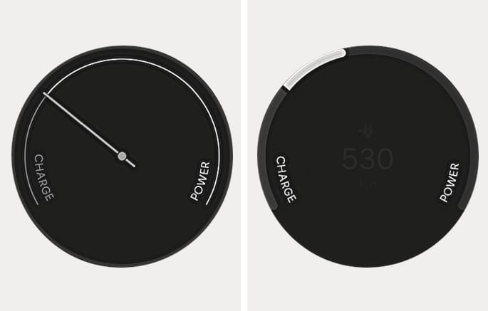
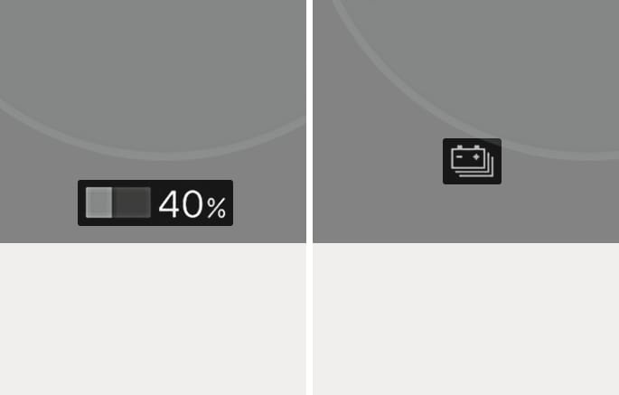

전기차 주행 정보 확인하기
전기차 주행 중 차량의 클러스터에는 주행 가능 거리, 실시간 에너지 현황, 배터리 충전량, 경고 메시지 등 전기차의 주행과 관련된 주요 정보가 사용자 인터페이스 및 표시등을 통해 표시됩니다.

2C_DistanceToEmpty
주행 가능 거리는 현재 배터리 충전량으로 주행할 수 있는 거리를 의미하며, 전기차 주행 중 클러스터에 표시됩니다.
-
주행 가능 거리는 운전 방식, 전기 부하 사용량, 사용 환경, 고전압 배터리 에너지 등 다양한 요소들을 종합적으로 반영하므로 공인 인증 수치보다 증가하거나 감소할 수 있습니다.
주행 가능 거리에 영향을 미치는 요소
-
운전 방식: 주행 속도와 가속 또는 감속 성향을 의미하며, 주행 속도가 높거나 가속 또는 감속이 빈번할수록 주행 가능 거리가 감소합니다.
-
전기 부하 사용: 에어컨, 히터, 램프 등의 부가적인 전력 사용을 의미하며, 사용량이 증가할수록 주행 가능 거리가 감소합니다.
-
사용 환경: 날씨, 온도, 지형을 의미하며, 눈, 비가 내리거나 강한 바람이 불 때, 또는 기온이 낮을 때 주행하면 주행 가능 거리가 감소합니다. 오르막길 또는 미끄럽거나 거친 노면을 주행하는 경우에도 주행 가능 거리가 감소합니다.
-
고전압 배터리 에너지: SOC(충전량)에 비례하지만 배터리 온도 및 SOH(배터리 건강 상태) 등에 따라 달라질 수 있습니다.
100 % 충전 시 주행 가능 거리의 변화
-
운전 방식이나 사용 환경에 의한 학습으로 주행 가능 거리가 짧아진 경우에는 '전기차 주행 정보 확인하기'의 '주행 가능 거리 향상을 위한 팁'에 따라 지속적으로 주행하면 주행 가능 거리를 다시 늘릴 수 있습니다.
-
당사 직영 하이테크센터나 블루핸즈에서 학습 데이터를 초기화하면 클러스터 하단에 표시된 주행 가능 거리가 길어질 수 있으나, 실제 주행 가능 거리가 증가하지는 않습니다.
-
차량이 운전자의 운전 습관을 학습하는 동안에는 표시된 주행 가능 거리가 정확하지 않을 수 있습니다.
-
겨울철 고전압 배터리 온도가 낮아지면 주행 가능 거리가 감소합니다. 저온 환경에서의 주행 거리 감소는 영구적인 변화가 아니며, 온도가 상승하면 주행 가능 거리가 다시 증가합니다.
-
전기 부하 사용을 줄이면 주행 가능 거리가 증가합니다.
-
차량 사용 기간에 따라 고전압 배터리의 자연 열화가 발생하며, 이에 따라 주행 가능 거리가 감소합니다.
주행 경로를 설정하는 경우
목적지까지 주행 경로를 설정하는 경우, 기존에 학습된 주행 연비 대신 경로 정보를 반영해 연비를 예측하므로 표시된 주행 가능 거리가 달라질 수 있습니다.
실제 주행 가능 거리는 교통 상황이나 주행 속도 등에 따라 달라질 수 있습니다.
주행 가능 거리 향상을 위한 팁
다음 안내에 따라 차량을 주행하면 주행 가능 거리를 늘릴 수 있습니다.
-
연비 개선과 주행 거리 향상을 위해 과속을 피하십시오. 차량의 주행 속도가 높아지면 공기 저항이 급격하게 증가합니다.
-
급가속 및 급감속을 피하고 가속 페달을 일정하게 유지해 경제 속도로 주행하십시오. 급가속 시에는 구동에 소비되는 에너지가 증가하며, 급감속 시에는 회생 제동 기능이 제한됩니다.
-
냉난방 작동 시 고전압 배터리 전력을 사용하므로, 히터나 에어컨을 과도하게 사용하면 전력 소모 증가로 주행 가능 거리가 짧아질 수 있습니다. 냉난방 온도를 22℃ AUTO로 설정하면 주행 중 에너지 사용을 최적화할 수 있습니다.
-
냉난방이 필요하지 않을 때는 히터 및 에어컨을 끄고 주행하십시오. 겨울철 주행 시 난방을 줄이고 열선 시트를 사용하면 주행 거리 향상에 큰 도움이 됩니다.
-
히터 및 에어컨 시스템을 사용할 때 '내기 순환 모드'를 선택하면 외기의 가열 또는 냉각에 사용되는 에너지를 절약할 수 있습니다.
-
창문을 닫고 주행하십시오. 주행 중 창문을 열면 공기 저항이 증가하며, 히터 또는 에어컨 사용량도 늘어나게 됩니다.
-
운전자 혼자 탑승했을 때 히터 및 에어컨 시스템을 이용하려는 경우, 운전석 개별 공조(DRIVER ONLY) 기능을 사용하십시오.
-
전기차 전용 타이어를 사용하고 지정된 타이어 공기압을 유지하십시오.
-
주행 중 불필요한 전기 장치를 사용하지 마십시오.
-
불필요한 짐을 싣고 주행하지 마십시오.
-
공기 저항을 증가시키는 부품을 차량에 부착하지 마십시오.
주행 가능 거리가 부족한 경우
-
배터리 경고등이 켜지면 즉시 가까운 충전소에서 차량을 충전하십시오.
-
'전기차 주행 정보 확인하기'의 '주행 가능 거리 향상을 위한 팁'에 따라 에너지를 절약하십시오.
-
배터리 충전량이 0 %가 되는 경우 무리하게 차량을 주행하지 말고, 안전한 곳에 정차한 후 구조를 요청하십시오.

2C_PowerChargeGauge
CHARGE/POWER 게이지는 회생 제동 기능이 생산하는 전기 에너지와 모터 소비 전력의 충전 및 방전 상태를 표시합니다.
-
CHARGE: 차량을 감속하거나 내리막길을 주행할 때 회생 제동을 통한 배터리의 충전 상태를 표시합니다. 충전량이 많을수록 막대가 아래로 이동합니다.
-
POWER: 차량을 가속하거나 오르막길을 주행할 때 모터가 소비하는 전력을 표시합니다. 소비 전력이 높을수록 막대가 위로 이동합니다.

2C_ChargingLevelIndicator
CHARGE/POWER 게이지 하단의 배터리 충전량 표시계는 고전압 배터리의 충전 상태를 백분율로 표시합니다.
-
숫자가 낮을수록 충전이 필요한 상태이며, 100 %는 완전 충전 상태를 표시합니다.
-
고전압 배터리 충전량이 10 % 이하가 되면 배터리 경고등이 표시됩니다.
-
배터리 경고등이 표시되면 차량을 충전하십시오.
-
주변의 충전소 위치를 검색하려면 '충전소 검색 기능 사용하기'를 참고하십시오.
-
고속도로나 자동차 전용 도로를 주행하기 전에 고전압 배터리의 충전량이 충분한지 확인하십시오.
-
경고등이 켜진 후에는 도로의 경사도나 기온 등 주행 환경에 따라 차량의 주행이 원활하지 않을 수 있으므로, 즉시 가까운 충전소에서 차량을 충전하십시오.